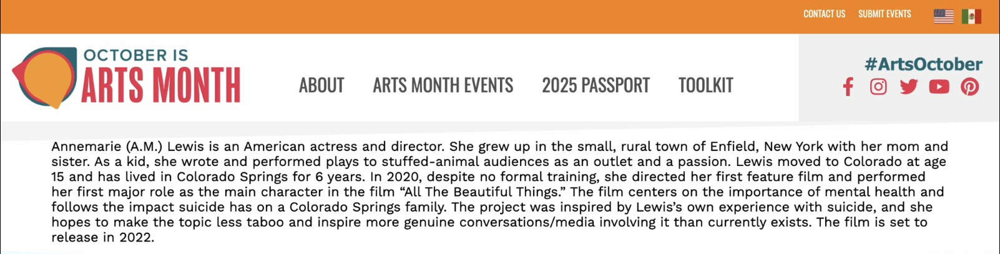

Arts October

04
Arts October — Artist Feature
Artist of the Day: A.M. Lewis
Featured as part of Arts October's Artist-a-Day series, spotlighting Lewis's path from a small town in New York to directing and starring in her first feature film in Colorado Springs.
Read the Feature →